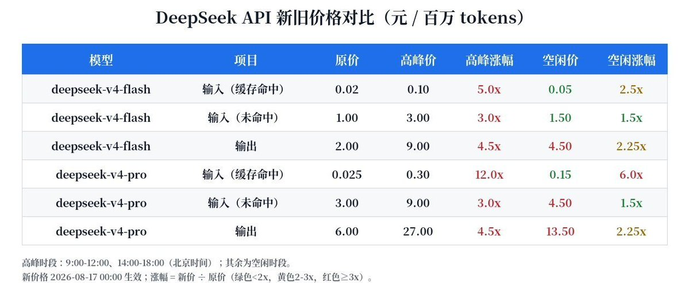
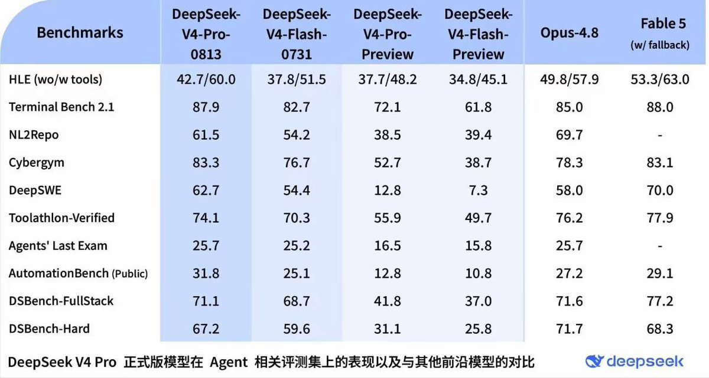
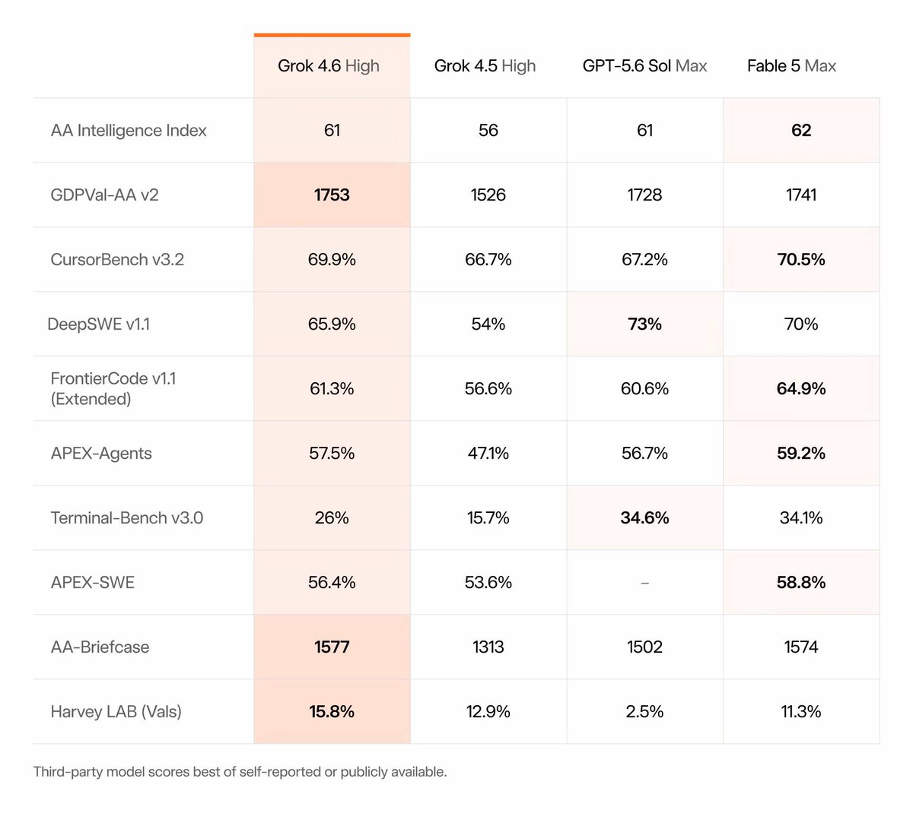

奶昔🥤
@realNyarime
涨价了 我们将对 DeepSeek API 价格进行更新调整，采用峰谷定价，空闲时段价格为高峰时段价格的一半。高峰时段为北京时间 9:00 - 12:00、14:00 - 18:00（其余为空闲时段）。新价格将于北京时间 2026 年 8 月 17 日 00:00 开始生效🤣



奶昔🥤
@realNyarime
DeepSeek v4 pro 出正式版 0813，Grok4.6 也紧随发布，目前来看梁圣还没涨价 期待各大 AI 博主的评测！ https://t.co/BKuD2txA9N https://t.co/v5tsjaYfNL